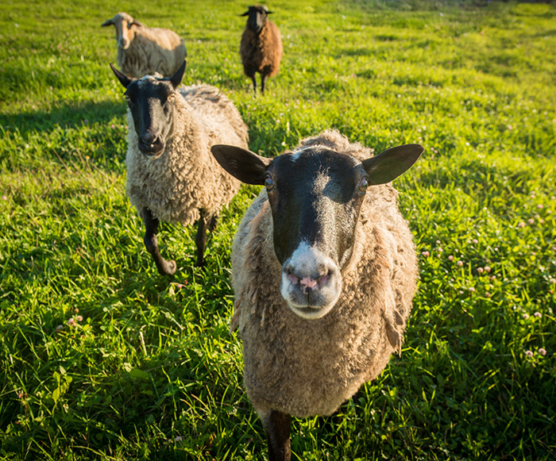

How It Works?
Organic agriculture, which is governed by strict government standards, requires that products bearing the organic label are produced without the use of toxic and persistent pesticides and synthetic nitrogen fertilizers, antibiotics, synthetic hormones, genetic engineering or other excluded practices, sewage sludge, or irradiation.
